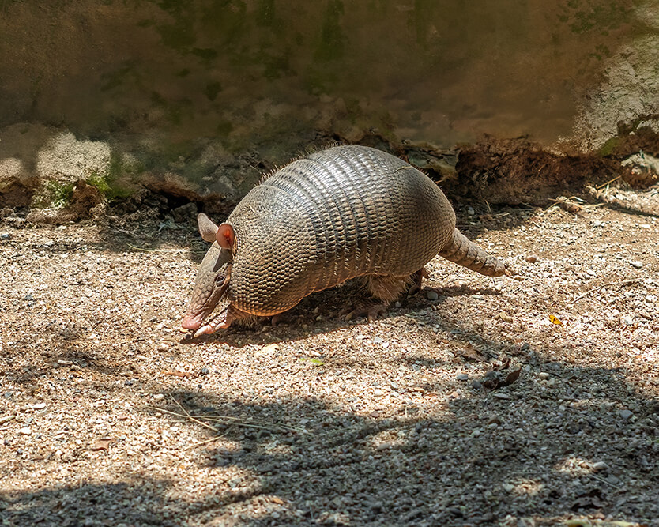

Armadillo, özellikle Orta ve Güney Amerika’da yaşayan, sert ve zırh benzeri kabuğuyla tanınan küçük memelilerdir; bu kabuk kemiksi plaklardan oluşur ve onları avcılardan korur. Ortalama 30–75 cm uzunluğa ve 3–30 kg ağırlığa ulaşabilir, türüne göre boyutları değişir. Çoğu armadillo gece aktiftir, böcekler, larvalar, küçük omurgasızlar ve bitkilerle beslenir; güçlü pençeleri sayesinde toprağı kazarak hem yiyecek arar hem de barınak oluşturur. Bazı türleri tehlike anında kabuklarını tamamen kapatarak yuvarlak bir top haline gelebilir. Doğada 7–15 yıl kadar yaşayabilir. Kültürel açıdan ise Latin Amerika halklarının mitolojisinde dayanıklılık, koruma ve doğanın gizemli savunma gücünün sembolü olarak görülür.